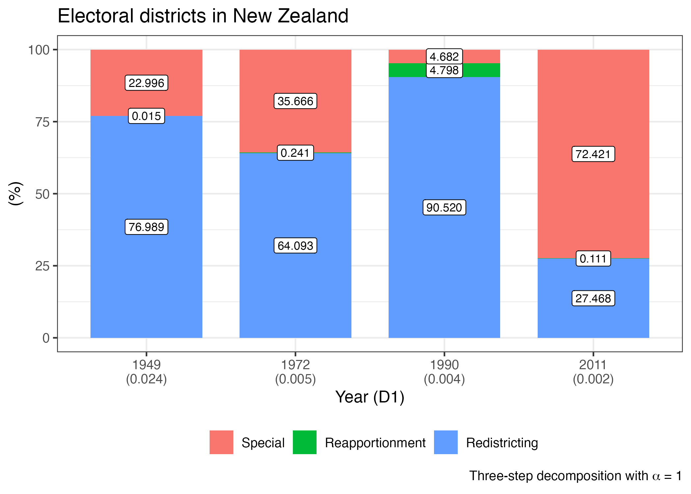

library(PRcalc)
library(tidyverse)Decomposition
Preparation
Two-step decomposition
\(\alpha\)-divergence (\(D^\alpha\)) can be decomposed in two components—apportionment and districting as follow:
\[ \begin{align} D^{\alpha} = & \underbrace{\sum_{j = 1}^{k} v_j \frac{1}{\alpha (\alpha - 1)} \log{\frac{s_j}{v_j}}}_{\mbox{approtionment term}} + \\ & \underbrace{\sum_{j=1}^{k} (s_j)^\alpha (v_j)^{1 - \alpha} \sum_{i=1}^{k_j} v_{j_i} \frac{1}{\alpha (\alpha - 1)} \Biggl[\biggl(\frac{s_{j_i}}{v_{j_i}}\biggr)^{\alpha} - 1 \Biggr]}_{\mbox{districting term}}\\\ = & D^{\alpha}_{\mbox{apportionment}} + \sum_{j=1}^k W^{\alpha}_j D^{\alpha}_{\mbox{districting}_j}. \end{align} \]
However there are two special cases, \(\alpha \rightarrow 0\) and \(\alpha \rightarrow 1\).
\[ \begin{align} D^0 = & \underbrace{\sum_{j = 1}^{k} v_j \log{\frac{v_j}{s_j}}}_{\mbox{approtionment}} + \underbrace{\sum_{j=1}^{k} v_j \sum_{i=1}^{k_j} v_{j_i} \log{\frac{v_{j_i}}{s_{j_i}}}}_{\mbox{districting}} \\ = & D^0_{\mbox{apportionment}} + \sum_{j=1}^k W^0_j D^0_{\mbox{districting}_j}. \end{align} \]
\[ \begin{align} D^1 = & \underbrace{\sum_{j = 1}^{k} s_j \log{\frac{s_j}{v_j}}}_{\mbox{approtionment}} + \underbrace{\sum_{j=1}^{k} s_j \sum_{i=1}^{k_j} s_{j_i} \log{\frac{s_{j_i}}{v_{j_i}}}}_{\mbox{districting}} \\ = & D^1_{\mbox{apportionment}} + \sum_{j=1}^k W^1_j D^1_{\mbox{districting}_j}. \end{align} \]
data("jp_lower_2021_en")
obj1 <- prcalc(jp_lower_2021_en,
m = c(8, 13, 19, 22, 17, 11, 21, 28, 11, 6, 20),
method = "dt")
obj2 <- prcalc(jp_lower_2021_en,
m = c(8, 13, 19, 23, 19, 11, 20, 29, 10, 5, 19),
method = "dt")
obj3 <- prcalc(jp_lower_2021_en,
m = c(8, 13, 19, 23, 19, 11, 20, 29, 10, 5, 19),
method = "msl")
decompose(obj1)alpha = 2
alpha-divergence Reapportionment Redistricting
0.054938814 0.002314718 0.052624096
Note: "alha-divergence" is sum of "Reapportionment" and "Redisticting" terms.decompose(obj2)alpha = 2
alpha-divergence Reapportionment Redistricting
0.0479196362 0.0003013664 0.0476182698
Note: "alha-divergence" is sum of "Reapportionment" and "Redisticting" terms.decompose(obj3)alpha = 2
alpha-divergence Reapportionment Redistricting
0.0397194583 0.0003013664 0.0394180919
Note: "alha-divergence" is sum of "Reapportionment" and "Redisticting" terms.Different \(\alpha\) also available. Default is 2.
decompose(obj1, alpha = 0.5)alpha = 0.5
alpha-divergence Reapportionment Redistricting
0.16624217 0.00232946 0.16391271
Note: "alha-divergence" is sum of "Reapportionment" and "Redisticting" terms.decompose(obj1, alpha = 1)alpha = 1
alpha-divergence Reapportionment Redistricting
0.091292423 0.002322713 0.088969710
Note: "alha-divergence" is sum of "Reapportionment" and "Redisticting" terms.decompose(obj1, alpha = 2)alpha = 2
alpha-divergence Reapportionment Redistricting
0.054938814 0.002314718 0.052624096
Note: "alha-divergence" is sum of "Reapportionment" and "Redisticting" terms.decompose(obj1, alpha = 3)alpha = 3
alpha-divergence Reapportionment Redistricting
0.044218023 0.002314004 0.041904020
Note: "alha-divergence" is sum of "Reapportionment" and "Redisticting" terms.Three-step Decomposition
If there is a level 0, such as overseas constituencies or minority constituencies, \(\alpha\)-divergence (\(D^\alpha\)) can be decomposed into three components—special, apportionment and districting terms as follow:
\[ \begin{align} D^{\alpha} = & \underbrace{\sum_{h = 1}^{k} v_h \frac{1}{\alpha (\alpha - 1)} \Biggl[\biggl(\frac{s_{h}}{v_{h}}\biggr)^{\alpha} - 1 \Biggr]}_{\mbox{special}} + \\ & \underbrace{\sum_{h = 1}^{k} (s_h)^{\alpha} (v_h)^{1 - \alpha} \sum_{j=1}^{k_j} v_{h_j} \frac{1}{\alpha (\alpha - 1)} \Biggl[\biggl(\frac{s_{h_j}}{v_{h_j}}\biggr)^{\alpha} - 1 \Biggr]}_{\mbox{approtionment}} \\ & \underbrace{\sum_{h = 1}^{k} (s_h)^{\alpha} (v_h)^{1 - \alpha} \sum_{j=1}^{k_j} (s_{h_j})^{\alpha} (v_{h_j})^{1 - \alpha} \sum_{i=1}^{k_{h_j}} v_{h_{j_i}} \frac{1}{\alpha (\alpha - 1)} \Biggl[\biggl(\frac{s_{h_{j_i}}}{v_{h_{j_i}}}\biggr)^{\alpha} - 1 \Biggr]}_{\mbox{districting}} \\ = & D^{\alpha}_{\mbox{special}} + \sum_{h=1}^{k}W_h^{\alpha} D^{\alpha}_{\mbox{apportionment}_h} + \sum_{h=1}^{k} \sum_{j=1}^{k_h} w_{h_j}^{\alpha} D^{\alpha}_{\mbox{districting}_{h_j}}. \end{align} \]
However there are two special cases, \(\alpha \rightarrow 0\) and \(\alpha \rightarrow 1\).
\[ \begin{align} D^0 = & \underbrace{\sum_{h=1}^{k} v_h \biggl(\log{\frac{v_h}{s_h}}\biggr)}_{\mbox{special}} + \underbrace{\sum_{h=1}^{k} v_h \sum_{j=1}^{k_h} v_{h_j} \biggl(\log{\frac{v_{h_j}}{s_{h_j}}}\biggr)}_{\mbox{apportionment}} + \\ & \underbrace{\sum_{h=1}^{k} v_h \sum_{j=1}^{k_h} v_{h_j} \sum_{i=1}^{k_{h_j}} \biggl(\log{\frac{v_{h_{j_i}}}{s_{h_{j_i}}}}\biggr)}_{\mbox{districting}} \\ = & D^0_{\mbox{special}} + \sum_{h=1}^{k}W_h^0 D^0_{\mbox{apportionment}_h} + \sum_{h=1}^{k} \sum_{j=1}^{k_h} w_{h_j}^0 D^0_{\mbox{districting}_{h_j}}. \end{align} \]
\[ \begin{align} D^1 = & \underbrace{\sum_{h=1}^{k} s_h \biggl(\log{\frac{s_h}{v_h}}\biggr)}_{\mbox{special}} + \underbrace{\sum_{h=1}^{k} s_h \sum_{j=1}^{k_h} v_{h_j} \biggl(\log{\frac{s_{h_j}}{v_{h_j}}}\biggr)}_{\mbox{apportionment}} + \\ & \underbrace{\sum_{h=1}^{k} s_h \sum_{j=1}^{k_h} s_{h_j} \sum_{i=1}^{k_{h_j}} \biggl(\log{\frac{s_{h_{j_i}}}{v_{h_{j_i}}}}\biggr)}_{\mbox{districting}} \\ = & D^1_{\mbox{special}} + \sum_{h=1}^{k}W_h^1 D^1_{\mbox{apportionment}_h} + \sum_{h=1}^{k} \sum_{j=1}^{k_h} w_{h_j}^1 D^1_{\mbox{districting}_{h_j}}. \end{align} \]
A special argument must be specified for three-step decomposition. In the case of New Zealand in 1949, four Maori electoral districts were in the special region, "Maori".
data("nz_district")
nz_1949 <- nz_district |>
dplyr::filter(year == 1949) |>
as_prcalc(l1 = "region",
l2 = "district",
p = "electorates",
q = "magnitude",
type = "nested")
nz_1949Raw:
Level2 Maori North South Total
1 1 12781 12754 13690 39225
2 2 8697 9888 16547 35132
3 3 1355 15419 13811 30585
4 4 12063 13096 14841 40000
5 5 0 12831 14297 27128
6 6 0 13698 13157 26855
7 7 0 14915 14120 29035
8 8 0 15419 13527 28946
9 9 0 14002 14419 28421
10 10 0 14515 14397 28912
11 11 0 16097 15412 31509
12 12 0 14117 15824 29941
13 13 0 14518 14571 29089
14 14 0 15049 15487 30536
15 15 0 15480 16297 31777
16 16 0 13714 14537 28251
17 17 0 14495 14950 29445
18 18 0 14000 16063 30063
19 19 0 15268 16035 31303
20 20 0 14570 14518 29088
21 21 0 14589 15080 29669
22 22 0 12839 14296 27135
23 23 0 15039 14628 29667
24 24 0 15589 14041 29630
25 25 0 15068 13374 28442
26 26 0 15658 14608 30266
27 27 0 18209 0 18209
28 28 0 16445 0 16445
29 29 0 17794 0 17794
30 30 0 13894 0 13894
31 31 0 15260 0 15260
32 32 0 12497 0 12497
33 33 0 14784 0 14784
34 34 0 14196 0 14196
35 35 0 14131 0 14131
36 36 0 13774 0 13774
37 37 0 15325 0 15325
38 38 0 13925 0 13925
39 39 0 13655 0 13655
40 40 0 15655 0 15655
41 41 0 15324 0 15324
42 42 0 16460 0 16460
43 43 0 15515 0 15515
44 44 0 14286 0 14286
45 45 0 15683 0 15683
46 46 0 14872 0 14872
47 47 0 17131 0 17131
48 48 0 14076 0 14076
49 49 0 14863 0 14863
50 50 0 10944 0 10944
Result:
Level2 Maori North South Total
1 1 1 1 1 3
2 2 1 1 1 3
3 3 1 1 1 3
4 4 1 1 1 3
5 5 0 1 1 2
6 6 0 1 1 2
7 7 0 1 1 2
8 8 0 1 1 2
9 9 0 1 1 2
10 10 0 1 1 2
11 11 0 1 1 2
12 12 0 1 1 2
13 13 0 1 1 2
14 14 0 1 1 2
15 15 0 1 1 2
16 16 0 1 1 2
17 17 0 1 1 2
18 18 0 1 1 2
19 19 0 1 1 2
20 20 0 1 1 2
21 21 0 1 1 2
22 22 0 1 1 2
23 23 0 1 1 2
24 24 0 1 1 2
25 25 0 1 1 2
26 26 0 1 1 2
27 27 0 1 0 1
28 28 0 1 0 1
29 29 0 1 0 1
30 30 0 1 0 1
31 31 0 1 0 1
32 32 0 1 0 1
33 33 0 1 0 1
34 34 0 1 0 1
35 35 0 1 0 1
36 36 0 1 0 1
37 37 0 1 0 1
38 38 0 1 0 1
39 39 0 1 0 1
40 40 0 1 0 1
41 41 0 1 0 1
42 42 0 1 0 1
43 43 0 1 0 1
44 44 0 1 0 1
45 45 0 1 0 1
46 46 0 1 0 1
47 47 0 1 0 1
48 48 0 1 0 1
49 49 0 1 0 1
50 50 0 1 0 1
Parameters:
Allocation method:
Extra parameter:
Threshold:
Magnitude:
Maori North South
4 50 26 These four Maori electoral districts are treated as a special region ("Maori") and assigned to special argument (special = "Maori").
decompose(nz_1949, alpha = 1, special = "Maori")alpha = 1
alpha-divergence Special Reapportionment Redistricting
2.388943e-02 5.493500e-03 3.683160e-06 1.839225e-02
Note: "alha-divergence" is sum of "Special", "Reapportionment" and "Redisticting" terms.Comparison
compare(list("D'Hondt" = decompose(obj1),
"D'Hondt + Modified magnitudes" = decompose(obj2),
"Modified-SL + Modified magnitudes" = decompose(obj3))) Type D'Hondt D'Hondt + Modified magnitudes
1 Alpha-divergence 0.05494 0.047920
2 Reapportionment 0.00231 0.000301
3 Redistricting 0.05262 0.047618
Modified-SL + Modified magnitudes
1 0.039719
2 0.000301
3 0.039418
Note: "alpha-divergence" is sum of "Reapportionment" and "Redisticting" terms.list("Scenario 1" = decompose(obj1),
"Scenario 2" = decompose(obj2),
"Scenario 3" = decompose(obj3)) |>
compare() |>
print(use_gt = TRUE, digits = 5)| Type | Scenario 1 | Scenario 2 | Scenario 3 |
|---|---|---|---|
| Alpha-divergence | 0.05494 | 0.04792 | 0.03972 |
| Reapportionment | 0.00231 | 0.00030 | 0.00030 |
| Redistricting | 0.05262 | 0.04762 | 0.03942 |
| Note: "alpha-divergence" is sum of "Reapportionment" and "Redisticting" terms. | |||
Visualization
後ほど、{purrr}を使ったより効率的なやり方を紹介する。
nz_1972 <- nz_district |>
dplyr::filter(year == 1972) |>
as_prcalc(l1 = "region",
l2 = "district",
p = "electorates",
q = "magnitude",
type = "nested")
nz_1990 <- nz_district |>
dplyr::filter(year == 1990) |>
as_prcalc(l1 = "region",
l2 = "district",
p = "electorates",
q = "magnitude",
type = "nested")
nz_2011 <- nz_district |>
dplyr::filter(year == 2011) |>
as_prcalc(l1 = "region",
l2 = "district",
p = "electorates",
q = "magnitude",
type = "nested")
decompose_1949 <- decompose(nz_1949, alpha = 1, special = "Maori")
decompose_1972 <- decompose(nz_1972, alpha = 1, special = "Maori")
decompose_1990 <- decompose(nz_1990, alpha = 1, special = "Maori")
decompose_2011 <- decompose(nz_2011, alpha = 1, special = "Maori")
nz_compare <- list("1949" = decompose_1949,
"1972" = decompose_1972,
"1990" = decompose_1990,
"2011" = decompose_2011) |>
compare()
print(nz_compare, use_gt = TRUE, digits = 5)| Type | 1949 | 1972 | 1990 | 2011 |
|---|---|---|---|---|
| Alpha-divergence | 0.02389 | 0.00454 | 0.00358 | 0.00181 |
| Special | 0.00549 | 0.00162 | 0.00017 | 0.00131 |
| Reapportionment | 0.00000 | 0.00001 | 0.00017 | 0.00000 |
| Redistricting | 0.01839 | 0.00291 | 0.00324 | 0.00050 |
| Note: "alpha-divergence" is sum of "Special", "Reapportionment" and "Redisticting" terms. | ||||
nz_compare |>
plot() +
labs(x = "Year (D1)",
title = "Electoral districts in New Zealand",
caption = expression(paste("Three-step decomposition with ", alpha, " = 1")))list("1949" = decompose_1949,
"1972" = decompose_1972,
"1990" = decompose_1990,
"2011" = decompose_2011) |>
compare() |>
plot(percentage = TRUE) +
labs(x = "Year (D1)", y = "(%)",
title = "Electoral districts in New Zealand",
caption = expression(paste("Three-step decomposition with ", alpha, " = 1")))
Compatibility with {purrr}
# 1949-2011
nz_decompose_all <- nz_district |>
group_by(year) |>
nest() |>
mutate(data = map(data, \(x) as_prcalc(x,
l1 = "region",
l2 = "district",
p = "electorates",
q = "magnitude",
type = "nested")),
decompose = map(data, \(x) decompose(x,
alpha = 0,
special = "Maori"))) |>
pull(decompose)
names(nz_decompose_all) <- unique(nz_district$year)
nz_decompose_all |>
compare() |>
print(use_gt = TRUE, digits = 5)| Type | 1949 | 1951 | 1954 | 1957 | 1960 | 1963 | 1966 | 1969 | 1972 | 1975 | 1978 | 1981 | 1984 | 1987 | 1990 | 1993 | 1996 | 1999 | 2002 | 2005 | 2008 | 2011 |
|---|---|---|---|---|---|---|---|---|---|---|---|---|---|---|---|---|---|---|---|---|---|---|
| Alpha-divergence | 0.01399 | 0.01648 | 0.00817 | 0.00572 | 0.00707 | 0.00437 | 0.00783 | 0.00460 | 0.00430 | 0.00511 | 0.00653 | 0.00405 | 0.00298 | 0.00297 | 0.00354 | 0.00340 | 0.00168 | 0.00207 | 0.00230 | 0.00236 | 0.00160 | 0.00175 |
| Special | 0.00469 | 0.00359 | 0.00322 | 0.00262 | 0.00180 | 0.00147 | 0.00156 | 0.00153 | 0.00149 | 0.00121 | 0.00001 | 0.00050 | 0.00037 | 0.00026 | 0.00016 | 0.00014 | 0.00080 | 0.00156 | 0.00178 | 0.00171 | 0.00113 | 0.00125 |
| Reapportionment | 0.00000 | 0.00001 | 0.00016 | 0.00000 | 0.00008 | 0.00005 | 0.00000 | 0.00004 | 0.00001 | 0.00015 | 0.00002 | 0.00000 | 0.00006 | 0.00026 | 0.00017 | 0.00034 | 0.00002 | 0.00002 | 0.00003 | 0.00000 | 0.00001 | 0.00000 |
| Redistricting | 0.00930 | 0.01288 | 0.00480 | 0.00310 | 0.00519 | 0.00285 | 0.00627 | 0.00303 | 0.00281 | 0.00375 | 0.00650 | 0.00355 | 0.00255 | 0.00245 | 0.00320 | 0.00291 | 0.00086 | 0.00049 | 0.00049 | 0.00065 | 0.00046 | 0.00050 |
| Note: "alpha-divergence" is sum of "Special", "Reapportionment" and "Redisticting" terms. | ||||||||||||||||||||||
nz_decompose_all |>
compare() |>
plot(value_type = "total", value_angle = 90,
x_angle = 45, border_width = 0.5, digits = 6, border_color = "white") +
coord_cartesian(ylim = c(0, 0.025)) +
labs(title = "Electoral districts in New Zealand (1949-2011)",
caption = expression(paste("Note: Three-step decomposition with ", alpha, " = 2")))nz_decompose_all |>
compare() |>
plot(facet = TRUE, value_size = 2, digits = 5)Comparison between index() and decompose()
Please see “Marginal and joint distribution” in Measuring disproportionality.